A Summer Hebridean trip
A Summer Hebridean trip
The Cuillins, X-T2, Nikon 85mm
It’s been a long time since there has been time for photography: life, COVID, and other everyday challenges have conspired to distract us from our one-time major non-work activity. A trip to the Hebrides for a short summer break demanded at least some effort, so I took my Fuji X-T2 and three lenses; the Ricoh GR-III; and one concession to analogue photography, the Agfa Isolette.
Skye
We drove cross-country from the Forth to Skye Bridges, taking our time to shop a little at the House of Bruar (one has to, surely) and dally at Sligachan bridge, an old favourite of ours with a newish statue to the mountaineers Prof. Norman Collie and John Mackenzie.
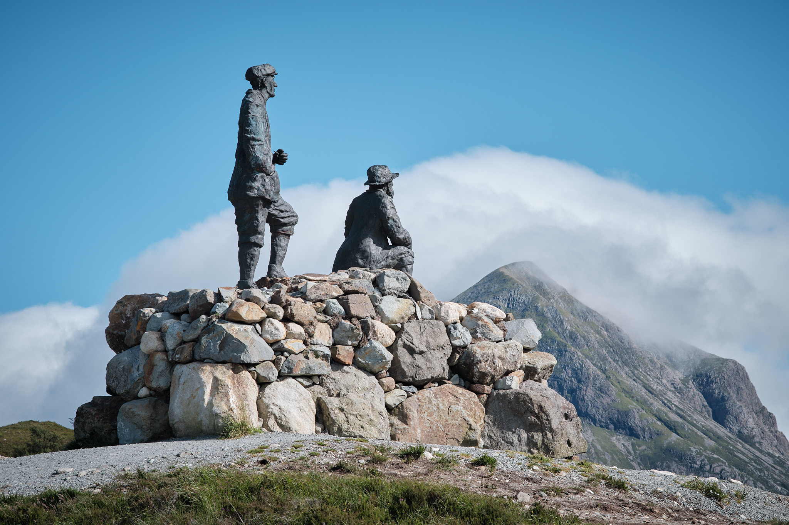 Statue of Collie and Mackenzie at Glen Sligachan. X-T2 with a Nikon 85mm f/1.4 lens.
The 50-year-old Nikon lens holds up nicely on the Fuji. Wide-open at f/1.4 I find it very hard to get the focus exact – the depth of field is very narrow – but it is still a very nice lens for softening the background. It performs better on the Nikon it was designed for, being quite dark on the Fuji compared to the Fuji XF 90mm f/2.
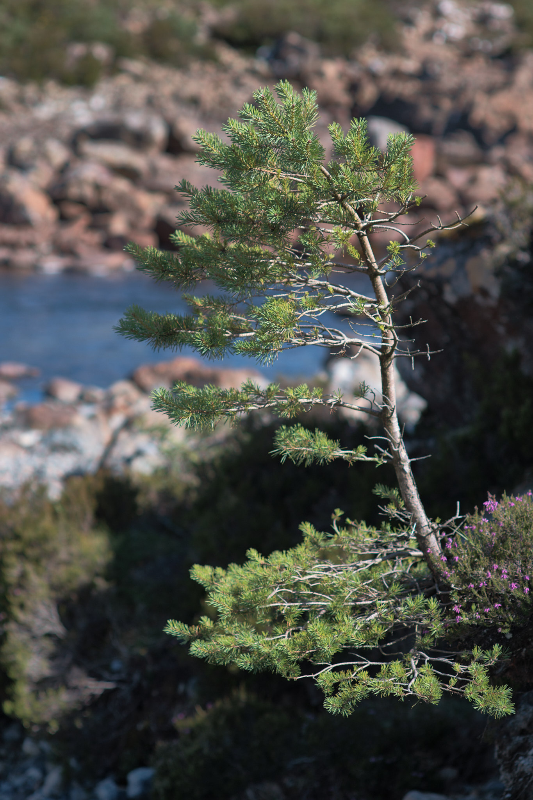 Glen Sligachan, X-T2, Nikon 85mm f/1.4 lens at about f/4.
The header image of Collie and Mackenzie’s Cuillins was also taken with the same camera and lens and shows off, in my view, the distinct colour profile of the Nikon glass. Make your own mind up whether you prefer the filmic shades of the Nikon over the technically superior and brilliant Fuji lenses.
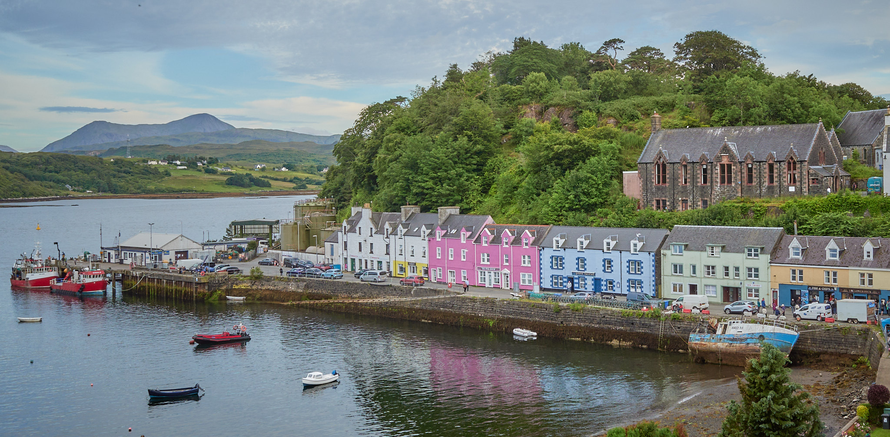 The iconic Portree harbour houses, Ricoh GR III at f/11, cropped.
Overnighting at a Hostel in Portree, we took the early ferry from Uig to Loch Maddy. I am always impressed with CalMac’s well-oiled operation, especially compared to the sometimes stressful experience of air travel. The 90 minute crossing was smooth and only slightly disappointing for not spotting seals at Vaternish Point. We consoled ourselves with a bacon and egg banjo in the “Mariners” café.
Five Islands
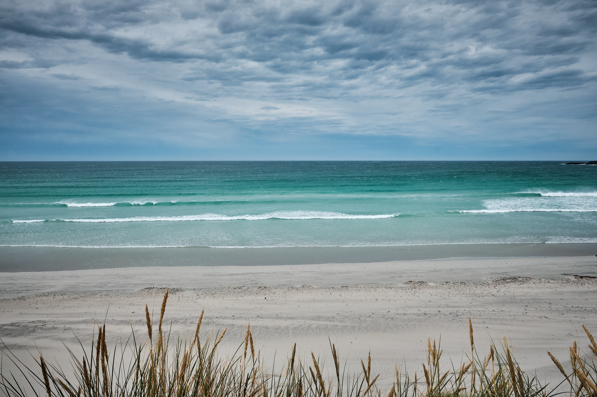
The first couple of days in our remote “pod” were quite overcast with an ever-present wind between 20 and 40 mph, as the rest of the UK was baking in a record-breaking heat wave. It was nice, actually, and gave us a chance to explore comfortably and get a feel for the local group of islands.
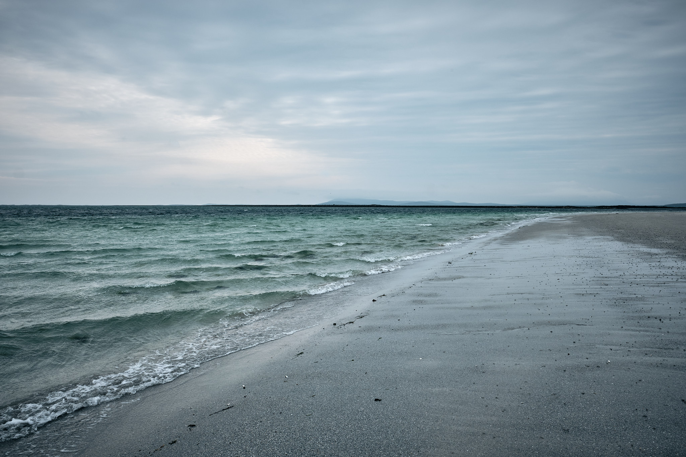 East Beach, Berneray Fuji X-T2, XF16mm f/1.4 lens at f/11, 1/250s, ISO 200.
The colours of the water and the machair were striking, different at every location and under the changing light. The sands are also rich with pattern and shade (below). The header image on this page was taken at Traigh Lar on North Uist which became one of our favourite places on our short trip. It was captured with the Fuji X-T2 and the XF16mm f/1.4 lens at f/16 to get the depth of field required to keep the grass in focus as well as the horizon. 1/1000s to freeze the waves, ISO 1000. There was a steep drop of about 20 m to the beach from this point.
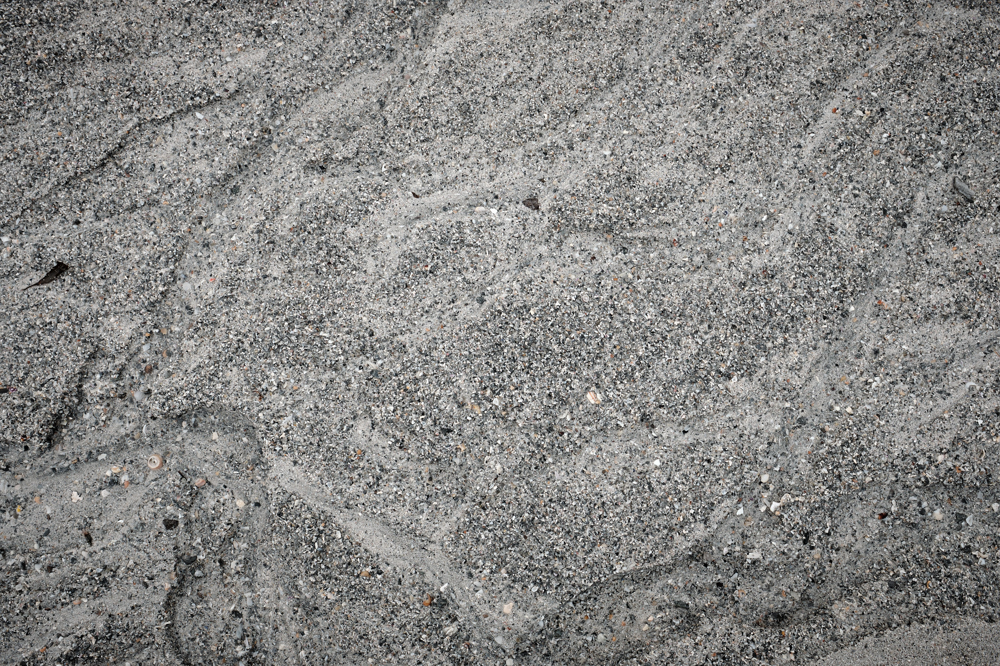 East Beach sands, Berneray Fuji X-T2, XF16mm f/1.4 lens at f/8, 1/1250, ISO 200.
Back on East Beach, the sands are also rich with pattern and texture. The countryside is rich with signs that it is expensive to dispose of old machinery and vehicles. Some effort seems to be made to at least gather the wreckage together. At Baleshare, a small collection of refrigerated trailers was forming. This one has signs of another era, like you see when shops change hands and ancient signwriting appears for a while.
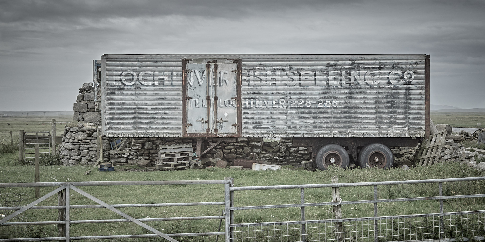 Dead trailer Ricoh GR III, processed in Capture One.
These two at least look like they’re trying to keep out of sight. The wheels stick out like shoes from under a curtain.
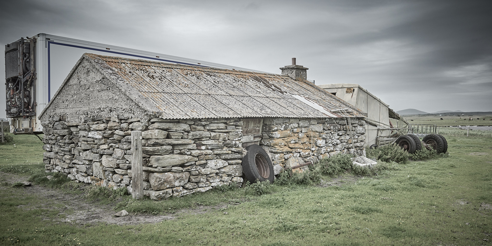 Hidden trailers Ricoh GR III, a similar process in Capture One.
To Eriskay and back
We drove the length of the Outer Hebrides, at least without leaving the land. There are many causeways now connecting the various island communities and making commerce and life in general much easier for the people who live and work here. We visited five islands: North and South Uist, Berneray, Benbecula and Eriskay. We’re not counting Baleshare, although it connects to North Uist by another causeway. Most of the time one side of the causeway is all sand, and when it’s not, you could probably still wade across. We didn’t test that theory.
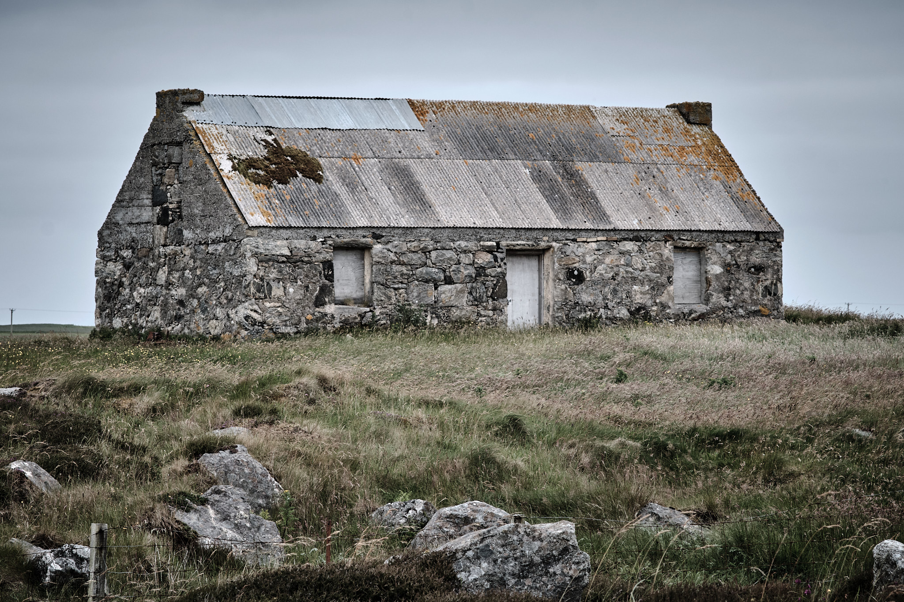 Howmore Bothy (Fuji, Nikon 85mm lens)
Everywhere there are what seems like abandoned or derelict buildings. This example I photographed with both the Fuji (above) and the Ricoh (below) to create a different mood. I’m not sure how successful it is: the wider angle of the Ricoh allows more context to create a story with.
 Howmore Bothy (Ricoh, 18mm lens)
Howmore Bothy (Ricoh, 18mm lens)
What really captured my heart during our leisurely and unstructured schlep around these islands was the sheer loveliness of the flowers that are just everywhere, clearly loved and protected by the local people. The wildflower meadowland that edges the beaches and reaches inland is diverse and colourful. I took far too many photographs of these flowers but will not tire of them as they adorn my desktop and walls in the coming months. Here, from the beach at Eriskay, right by the Barra Ferry terminal, is Sea Rocket:
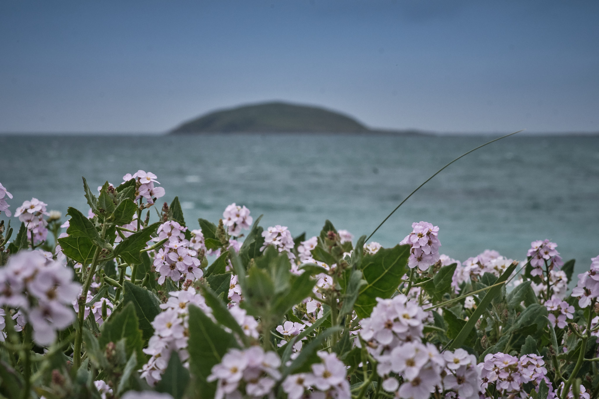 Fuday Island from Prince Charles’ Beach, Eriskay Sea Rocket, Fuji X-T2, Nikon 85mm lens.
Back “home” to the bothy and a walk after dinner on our own beach on the doorstep, entertained on the way by rabbits and various birds playing and raising families in the meadowland.
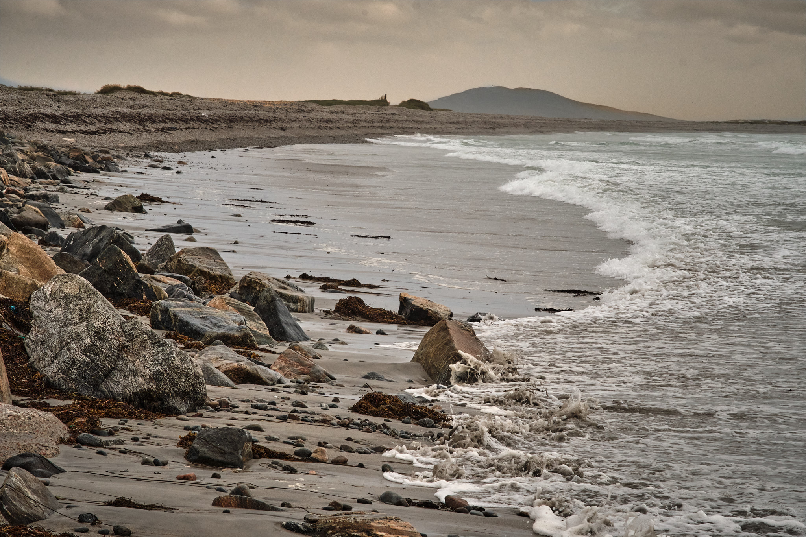 The beach at Baleshare, Fuji X-T2, Nikon 85mm lens.
Along the way, we met many of the residents.
Residents
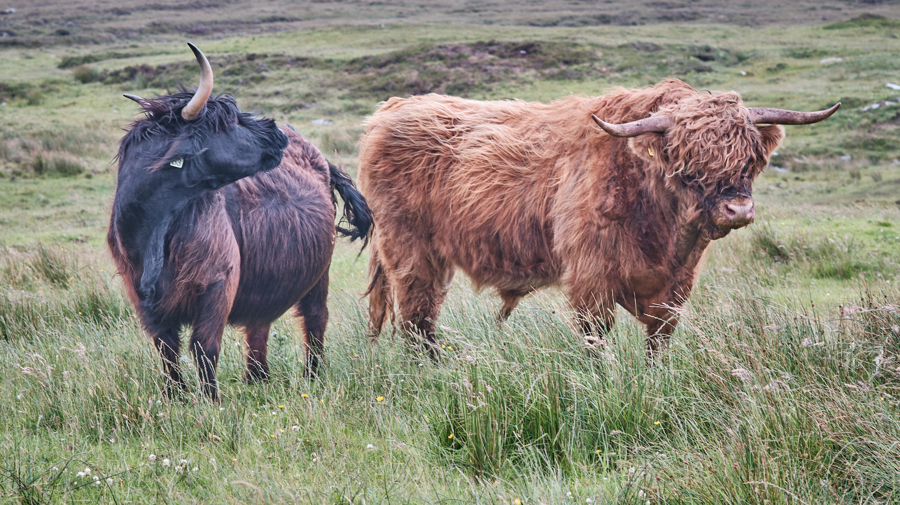 Locals Fuji X-T2, Nikon 85mm
The islands have a thriving farming sector and there are sheep on every single-track road personally introducing themselves to foreign visitors. Birds are many and diverse: it is easy to see a host of sea birds in and around the machar and on the hillsides are Golden Eagles, Hen Harriers and short-eared owls hunting in the daytime.
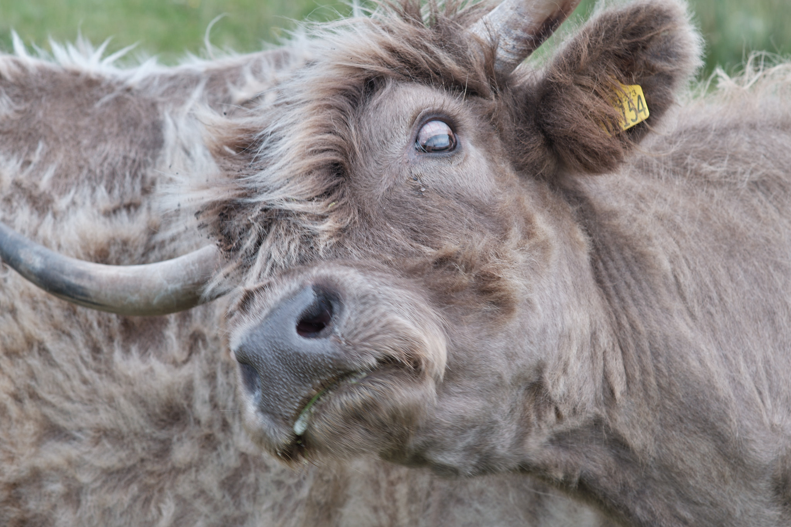 Locals Fuji X-T2, Nikon 85mm
The diversity of the wildlife is noticeable for visitors like us from the central belt of Scotland. We seem to have a disproportionate seagull population and we can probably do with less of the fat pigeons and magpies, frankly.
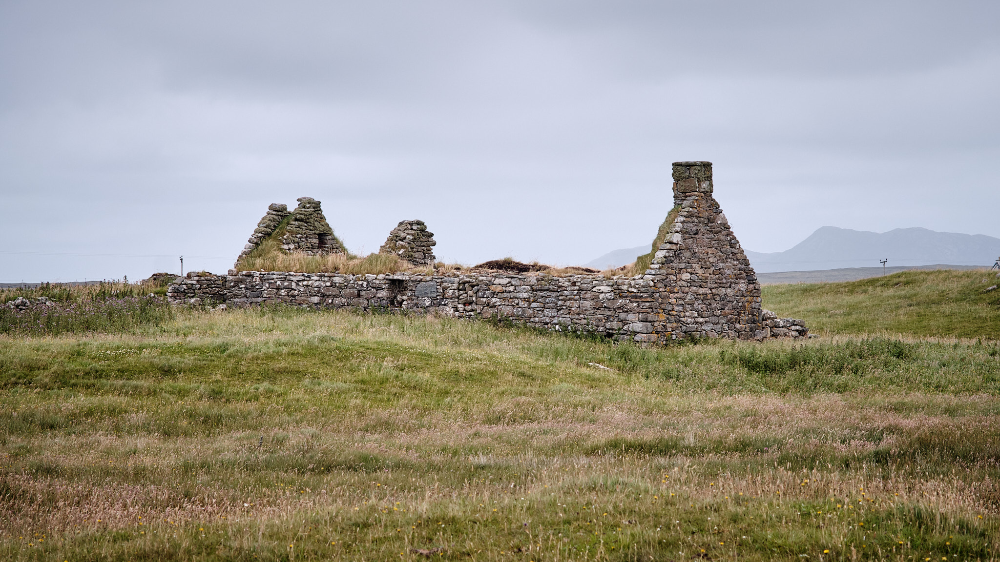 Where once working families lived, now stand more mechanised, efficient farming practices that make use of the land by fewer humans. A still nascent tourism industry is booked to capacity and locals still wave as visitors yield the right of way in the passing places. There is potential for development of abandoned plots and buildings across the islands. I hope that never comes to spoil the place.
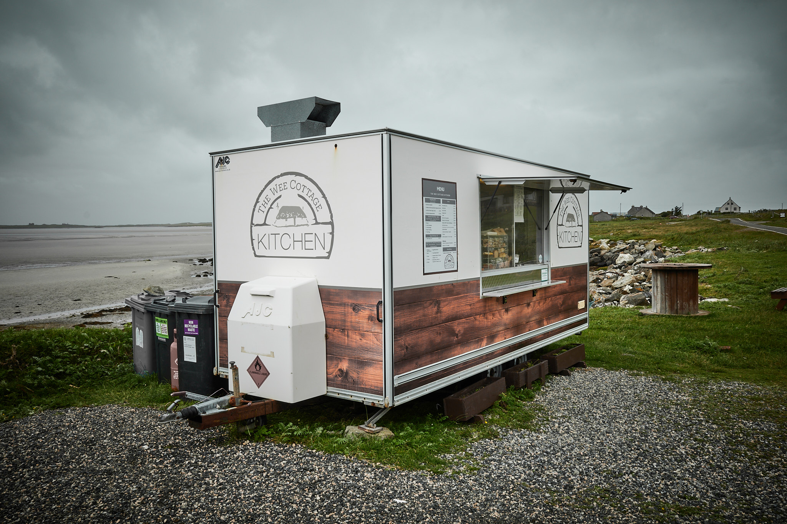 The roadside food wagon is no innovation nor is it a quaint enterprise: the food is home-made, delicious and locally sourced. You have to try the scallops and black pudding roll. Radio buzzers notify in your car when your lunch is ready and yes, they take contactless American Express. Check out the recycling bins. Even the coffee-cup lids are made of paper pulp. The Outer Hebrideans are right on trend when it comes to sustainable service.
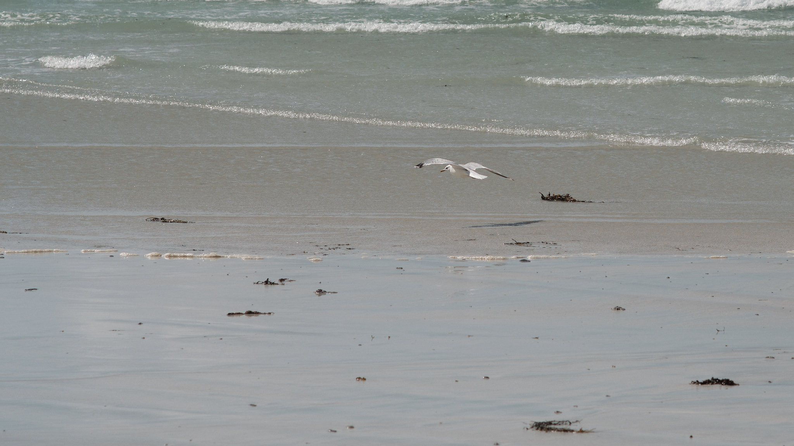 Sea birds abound along the shorelines and there are sites of special scientific interest intended to protect the diverse species, not least those that depend on the environment to breed and thrive. There are as many halfwits who will open gates to drive their SUVs across these spaces to access their picnics, of course but we think we saw at least one person openly challenge such behaviour.
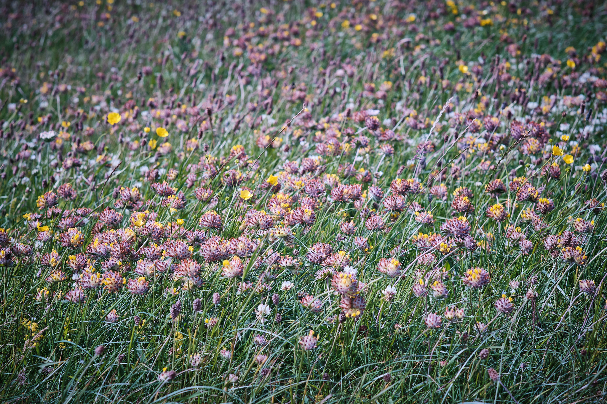 Most precious and beautiful of the environmental backdrop here is the machair. It is looked after and protected, as far as one can protect from human activity. Here may be common buttercups and clover but if you look, you can see many kinds of orchid.
Au Revoir
 This image will give you a sense of what we had hoped for when we headed North on our holiday. That image is actually a stitch of 8 images taken with the X-T2 and 35mm f/2 lens. Each image was exposed at f/8, 1/125s at ISO 200 and assembled into a panorama in Capture One. It should make a nice print about 50 inches x 20 inches if I ever get around to that.
This image will give you a sense of what we had hoped for when we headed North on our holiday. That image is actually a stitch of 8 images taken with the X-T2 and 35mm f/2 lens. Each image was exposed at f/8, 1/125s at ISO 200 and assembled into a panorama in Capture One. It should make a nice print about 50 inches x 20 inches if I ever get around to that.
Our sixth island of the trip was Skye, of course, our gateway to the Outer Hebrides. The hills and skies of Skye are something to behold: a mere photograph, least of all a digital image on a computer screen, can’t give you anything like the sense of being there. I tried with images like this pano, taken from the side of the road on the way from Carbost, not far from Sligachan where this series of posts began.
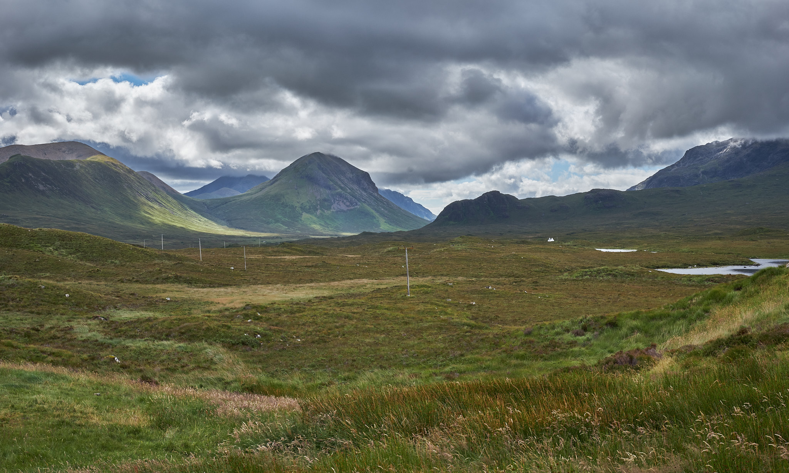
The Broadford Co-Op was full of surprises. The cheapest diesel I’ve bought for weeks, and the right range of snacks for the rest of the journey home. Oh, and this view from the car park:
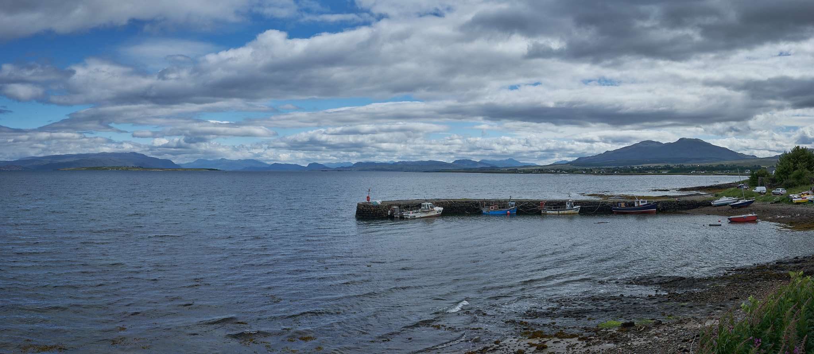
What we got from our trip was much better than we had hoped for, of course. We had the chance to explore and learn, visit and revisit under changing skies and light. We left with just the tip of a toe dipped in Hebridean life. In the end, I only took one photo with the Agfa. I forget what it was but no doubt it will pop out in a few months.